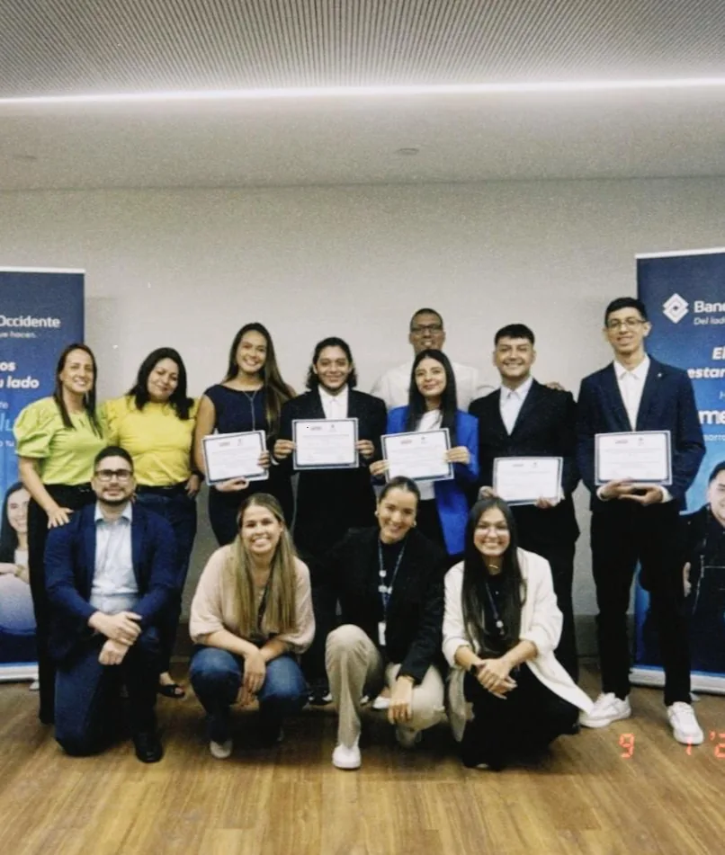
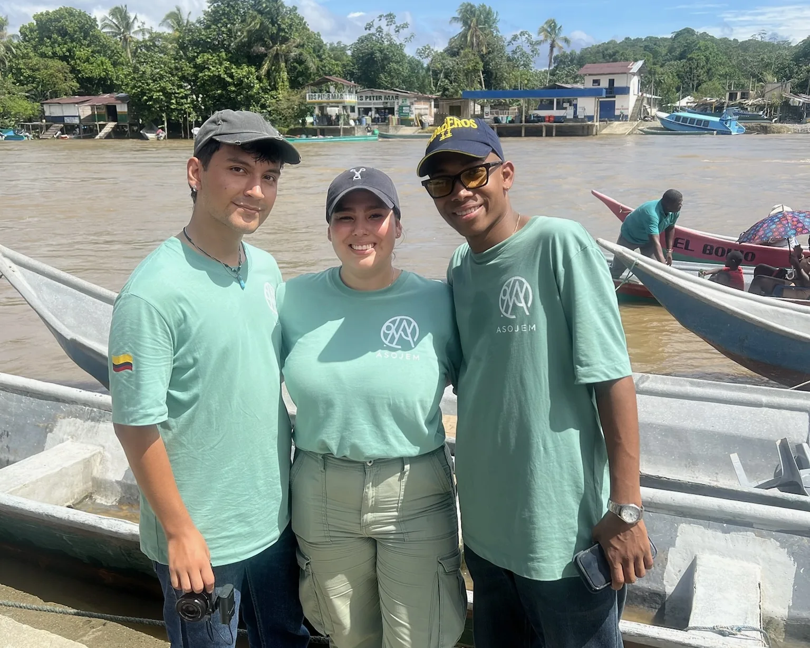
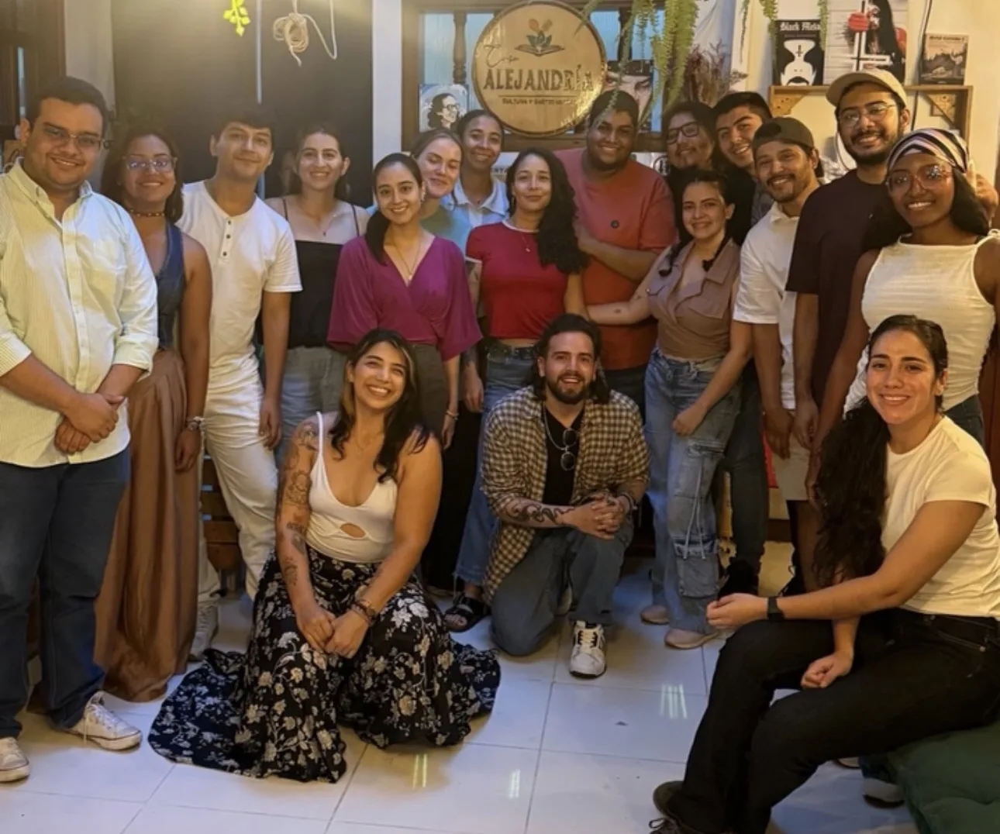
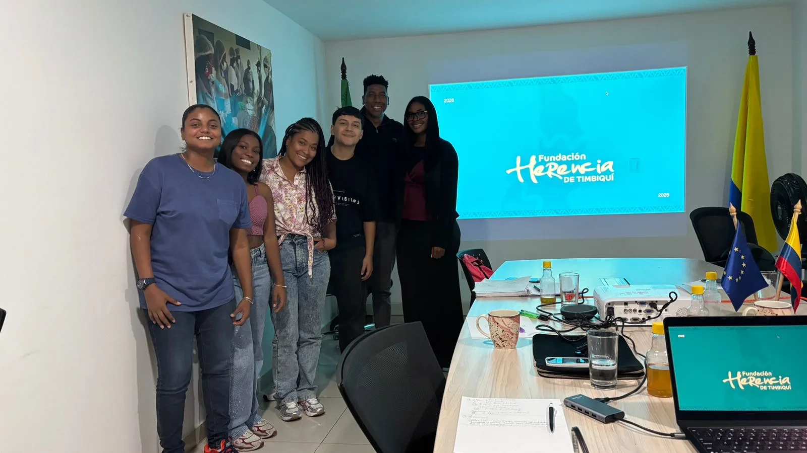
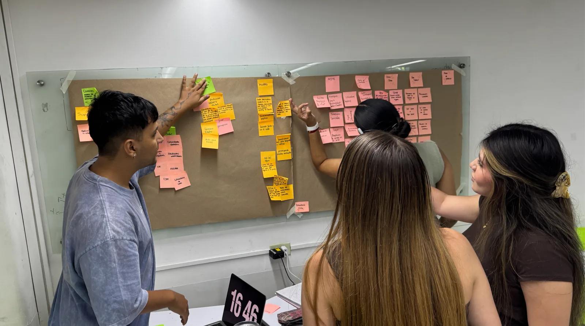
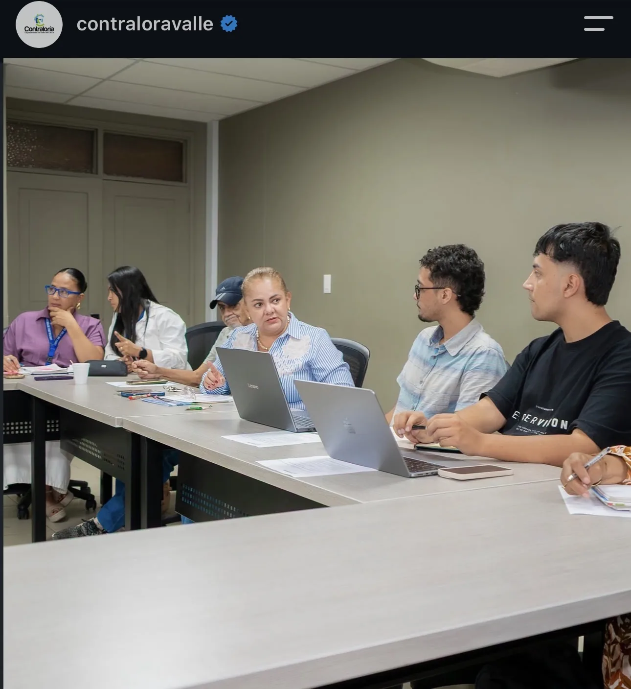
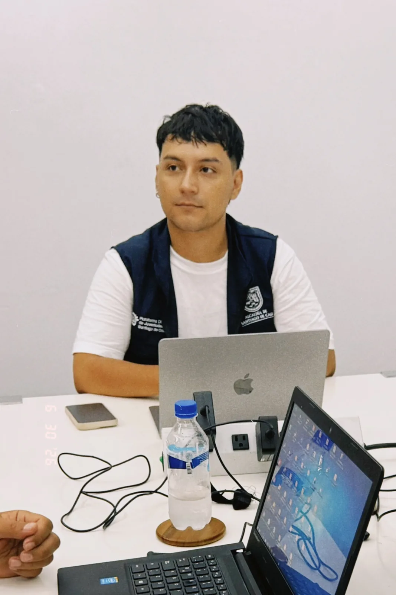
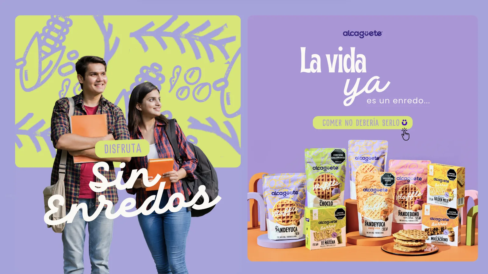
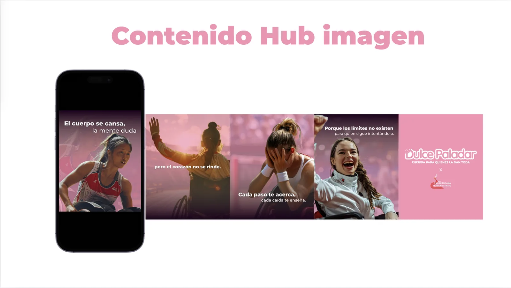

Banco de Occidente
Cocreé un plan estratégico de comunicación integral para el proyecto B1 del Banco de Occidente, enfocado en la comunicación interna y cultura organizacional del Banco.
Gestión y comunicación estratégica

Cocreé un plan estratégico de comunicación integral para el proyecto B1 del Banco de Occidente, enfocado en la comunicación interna y cultura organizacional del Banco.

Diseñé e implementé el plan estratégico de comunicaciones de la fundación, articulando contenidos y procesos comunitarios en el litoral Pacífico.

Coordino la gestión administrativa y de comunicaciones de la plataforma, articulando procesos juveniles a nivel distrital.

Coordino estrategias de comunicación y gestión social orientadas a la incidencia juvenil, articulando actores públicos y comunitarios a nivel nacional.

Lidero el proyecto “Gestión cultural cuir en Cali”, promoviendo iniciativas culturales de visibilización y fortalecimiento de comunidades LGBTIQ+ en la ciudad.

Acompaño y movilizo el ejercicio de control social ante proyectos de inversión pública en diferentes departamentos del Valle del Cauca entre los liderazgos juveniles.

Cocreé una campaña para públicos académicos y sociedad civil, con el objetivo de divulgar los informes de sostenibilidad con enfoque en el agua y el fenómeno de El Niño. En el marco de un ejercicio académico de consultoría organizacional.

Cocreé una estrategia de comunicación digital, enfocada en temporada de venta. En el marco de un ejercicio académico del curso Estrategia de redes sociales.

Cocreé una estrategia de comunicación digital, enfocada en un grupo objetivo, en este caso, mujeres. Trabajo realizado en el marco de un ejercicio académico del curso Estrategia de redes sociales.